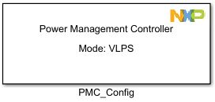
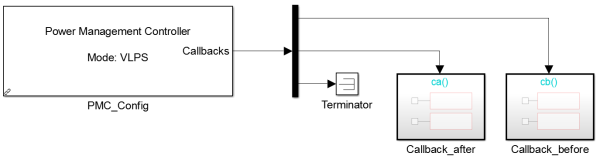
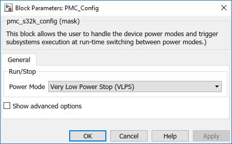
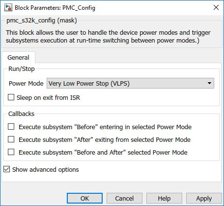

PMC Configuration Block
This block allows the user to handle the device power modes and trigger subsystems execution at run-time switching between power modes. For more information about power modes please read the AN5425, Power Management for S32K14x.
Block Image
Inputs:
- None
Outputs:
-
Callbacks - only as advanced option and only if one of the Callbacks checkbox is checked.
If calling a Callback function is required "Before","After" or "Before and after" switching between the power mode selected in the PMC_Config block, the output port will be enabled.
In order to connect the S-function callback, a demux with three outputs must be added like in the following image. The "Before" function must be connected on the first output, the "After on the second one and the "Before and After" function must be connected on the last output of the demux.
If one of the callback is not used, a terminator must be added.The following example shows a PMC_Config block that changes the running mode to VLPS and has two callbacks: the first one is called "Before" entering the VLPS mode and the second one is called "After" the ISR Handle is executed. The "Before and after" callback is not needed so a terminator was added.

Parameters and Dialog Box
The block dialog consists of the following tabs:
General
Power Mode
Selects which power mode to switch in.
- Very Low Power Stop (VLPS)
- Very Low Power Run (VLPR)
- High Speed Run (HSRUN)
- Normal Operating (RUN)
- Stop System and Bus clocks (STOP1)
- Stop System clock and keep Bus clock running (STOP2)
Show advanced options
Shows or hides the Advanced options tab.
Advanced
Sleep on exit from ISR
This checkbox indicates sleep-on-exit when returning from an ISR Handler.
- Unchecked - Normal sleep, returns to Thread mode after returning from an ISR.
- Checked - Enter sleep on return of an ISR.
Execute subsystem "Before" entering in selected Power Mode
This checkbox indicates if the "Before" Callback is active.
- Unchecked - No subsystem called before switching to selected power mode.
- Checked - First subsystem connected to the demux will be called before switching to selected power mode.
Execute subsystem "After" exiting from selected Power Mode
This checkbox indicates if the "After" Callback is active.
- Unchecked - No subsystem called after exiting the selected power mode.
- Checked - Second subsystem connected to the demux will be called after exiting selected power mode.
Execute subsystem "Before and After" selected Power Mode
This checkbox indicates if the "Before and After" Callback is active.
- Unchecked - No subsystem called before and after selected power mode.
- Checked - Last subsystem connected to the demux will be called before switching to selected power mode.
Block Dependency
- None
Block Miscellaneous Details
- VLPR – To reduce the power consumption the PLL clock is gated. To use this mode the Step Tick Timer must be Suppressed and LPTMR timer must be used to generate the Step function (it uses SIRC clock as main clock and remains active during VLPR mode). For more information please read the AN5425, Power Management for S32K14x. As example for VLPR mode please see "pmc_sleep_on_exit_s32k14.mdl".